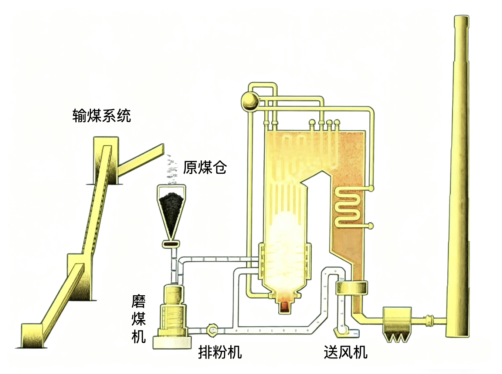

火电工艺
火力发电厂的基本生产过程
作为原料的燃煤由制粉系统研磨成很细的煤粉，煤粉和加热后的空气一起被送往锅炉炉膛，煤粉在炉膛中剧烈燃烧，并释放出大量的热量，这些热量将锅炉受热面内压力很高的水反复加热，直至达到 500 多摄氏度的高温蒸汽，高温高压蒸汽通过管道进入汽轮机的汽缸，推动汽轮机的转子高速旋转，发电机的转子与汽轮机的转子同轴连接，在汽轮机的驱动下随汽轮机同步旋转，旋转的转子磁场切割定子绕组，从而使发电机定子绕组中产生感应电动势，发电机产生的电能通过升压变压器、输电线路向电网输送，在汽轮机中做完功的蒸汽温度和压力降至很低，它们被排入凝汽器内放出余热并凝结成水，经加热器加热和水泵升压后再送到锅炉，汽水如此往复，不断循环。
锅炉设备
锅炉设备是火电厂的主要设备之一，是生产蒸汽的庞大而复杂的热交换设备。它的作用是将一定数量的燃料燃烧，并将燃烧释放的热量传递给水，使水加热、汽化并过热成一定压力和温度的主蒸汽。锅炉设备可分 5 部分：（1）锅炉本体；（2）输煤系统；（3）制粉系统；（4）烟风及燃烧系统；（5）除尘及排渣系统。
锅炉本体
锅炉本体包括炉膛、烟道、省煤器、汽包、下降管、水冷壁、过热器、再热器、燃烧器、空气预热器。其中省煤器、水冷壁、过热器、再热器、空气预热器称为锅炉的受热面，他们都是由许多金属管子组成的金属束。
如图 1 所示，红线表示蒸汽，蓝线表示水来示意锅炉里面的汽水流动，具有一定压力的水首先进入锅炉的省煤器，吸收来自烟道里烟气释放的热量，然后进入锅炉的汽包，水再沿着下降管进入到布置在锅炉四周的水冷壁，水在这里受热后开始汽化并产生蒸汽，所形成的汽水混合物自然上升，又回到汽包。汽包将汽和水分离，分离出的水又重新沿下降管返回到水冷壁中吸热、汽化。汽包中分离出的蒸汽则进入过热器进一步加热使其温度升高，形成高温高压的饱和蒸汽，最后送至汽轮机做功。
从过热器出来进入汽轮机的蒸汽称为主蒸汽，300 MW 机组的主蒸汽高达 16 MPa，约 160 个大气压以上，温度高达 530 ℃ 以上。在汽轮机中做过一部分功的蒸汽，其温度和压力都有所下降，需要将这些蒸汽又送回到锅炉的再热器中进行再次加热。在温度达到 530 ℃ 以后，再次送入汽轮机中继续做功，蒸汽返回锅炉进行再热的目的主要是提高机组的效率。做完功的蒸汽被凝结成水后返回到锅炉。这种形式的锅炉称为自然循环锅炉，其特点是水在水冷壁中不断汽化产生蒸汽时，因为汽水混合物的密度比水要小，它会自然上升进入汽包，而汽水分离后的水会自然经下降管进入到水冷壁，因此这种循环型式叫做自然循环。
当主蒸汽压力更高时，汽水的密度相差较小，就必须采用强制循环泵产生的动力使工质在水冷壁中流动，这种锅炉称为强制循环锅炉。当主蒸汽压力再进一步提高时，例如 600 MW 这样的高参数机组，就必须采用所谓的直流锅炉。这种锅炉不设汽包，工质是一次通过水冷壁，水冷壁出口已全部是蒸汽，因而也就不存在循环。
输煤系统
原煤一般可由火车、轮船和汽车等运至电厂，其中以火车运煤最为普遍。卸煤机械有多种形式，其中自动化程度最高的是翻车机。卸煤时，先将载煤列车解列，翻车机将整节煤车翻转 180°，将煤卸到地下的受煤斗中，卸下的煤再由胶带给煤机送到转运站，转运站可直接将煤送到锅炉房或煤场储存。煤场存煤可保证电厂 5～15 天的耗煤量。有的火电厂还设有混煤罐用于混配不同的煤种，以保证锅炉的正常燃烧，同时混煤罐还有储煤的作用。原煤通过一系列输煤栈桥被送往锅炉房，输煤栈桥内装有皮带输送机，原煤在输送途中首先要经过电磁除铁器，除去其中的铁件，还要经过碎煤机将较大的煤块儿破碎，最后将不含杂质的煤送往制粉系统。
制粉系统
作为大型锅炉燃料的原煤都必须研磨成很细的煤粉才能送到锅炉燃烧，完成这一任务的是制粉系统，制粉系统位于汽轮机车间和锅炉之间。制粉系统分为两种：（1）中间储藏式干燥剂送粉制粉系统（中储式制粉系统）；（2）直吹式制粉系统。
中储式制粉系统
由输煤系统将原煤送到锅炉房的原煤仓中，再由给煤机送入磨煤机，在其中研磨成煤粉。同时，经空气预热器加热的热风也进入到磨煤机，进入磨煤机的热风既可用来输送煤粉，还可对要研磨的煤起到加热干燥的作用，故称为干燥剂。磨制好的煤首先由热风送到粗粉分离器，在那里将不合格的煤粉分离出来，送到磨煤机再进行研磨。合格的煤粉则进入旋风分离器，旋风分离器也称为细粉分离器，它将空气和煤粉分离，分离出来的煤粉进入煤粉仓，分离出来的空气中仍含有少量煤粉，这部分空气称为乏气，再由排粉机抽出。煤粉仓中的煤粉再由给粉机根据锅炉负荷的需要控制输出量，排粉机出来的乏气将煤粉通过燃烧器推入炉膛燃烧。这种将煤粉送入炉膛燃烧的热风称为一次风，有的锅炉的一次风不是用旋风分离器分离出来的乏气，而是直接通过专门的一次风机将空气预热器出口的热风与煤粉混合，而旋风分离器分离出来的乏气则单独送入炉膛，这种中间储仓式制粉系统因为有煤粉仓的缓冲作用，系统工作不受锅炉负荷的影响，调节也比较灵敏。
直吹式制粉系统

直吹式制粉系统，它与中间储藏式制粉系统的不同之处在于不设煤粉仓，制出的煤粉直接送入锅炉，它具有系统简单，投资小的优点，但是煤粉量的调节比较困难。
风烟及燃烧系统
送风机从环境中吸入空气，然后送入空气预热器中加热，加热后的热风一部分去磨煤机，另一部分被称为二次风则直接进入炉膛去帮助燃烧。
煤粉悬浮在炉膛内燃烧，燃烧中心的温度可达 1500 ℃ 以上。燃烧时，大量的热量传给水冷壁里的水。 燃烧形成的高温烟气沿着烟道依次冲刷过热器、再热器、省煤器、空气预热器等受热面。不断将热量传递给蒸汽，水和空气，而自身温度逐渐降低。烟气到达烟道尾部时大约在 130 ℃ 左右。在引风机的作用下，烟气流入除尘器进行除尘净化，最后经烟囱排到大气。
除尘排渣系统
火电厂对环境的污染主要是随炉烟排出的飞灰粉尘和有害气体，一般采用除尘器和较高的烟囱来减轻污染。静电除尘器利用高压电厂产生的静电来除尘，它可除去烟气中 99 % 的粉尘。
炉内煤粉燃烧后的炉渣由捞渣机从炉底捞出并冲入地沟，再流至灰渣泵房。灰渣泵房利用管道将灰渣送至灰厂。除尘器出来的灰可以通过灰渣房再送至灰厂，也可通过气力输送管道或车辆送到灰渣利用单位。
汽轮机设备
热力系统及其辅助设备
汽轮机本体与锅炉本体之间由各种汽水管道，阀门及其辅助设备连成一个整体。这个整体便组成了发电厂的热力系统。热力系统除了要保证机组安全经济可靠的运行外，还要考虑机组能顺利启动、停机、切换设备和升降负荷等。因此热力系统，特别是大型机组的热力系统是相当复杂的。
图 8 是热力系统的示意图，热力系统的基本流程是这样的：来自锅炉的主蒸汽首先在汽轮机的高压缸里做功，从高压缸排出后又送入锅炉再热器中再加热，加热后的蒸汽又送入中压缸和低压缸中继续做功。最后汽轮机的排气进入凝汽器，凝汽器管束里侧通有来自环境的冷却水，排气在管束外侧流过时，不断放出余热，并凝结成水，冷却水将吸收的热量排入环境。从凝汽器排出的水称为主凝结水，为了提高机组的效率，主凝结水并不直接送到锅炉中，而是经过一系列加热器加热后，再进入锅炉。加热器的热源来自从气缸的不同部位抽出的蒸汽，用他们给加热器中的水进行加热。主凝结水经过凝结水泵升压后进入深度除盐装置进行水质处理，然后依次流过轴封加热器和4个低压回热加热器，在那里吸收来自汽轮机抽气的热量。主凝结水温度从 30 ℃ 左右不断升高，达到 140 ℃ 左右后进入除氧器。除氧器将主凝结水中溶解的氧气等气体除去，以免对设备和管道造成腐蚀。同时除氧器本身也是一个混合式加热器，也可对主凝结水进行加热。从除氧器下部水箱出来的水会送入给水泵，给水泵将水升到很高的压力。从给水泵出来的水称为主给水，主给水依次流过3个高压加热器，温度达到 260 ℃ 左右后进入省煤器，进行下一轮的汽水循环。为了使用和管理上的方便，一般都将加热器进行了编号，高压加热器为 1、2、3 号，除氧器为 4 号，低压加热器为 5、6、7、8 号。
热力系统，特别是大型机组的全面性热力系统很复杂，可以分为以下六个系统：（1）主蒸汽及汽轮机旁路系统；（2）凝汽系统；（3）低压加热器系统；（4）给水除氧系统；（5）高压加热器系统；（6）补充水系统。
主蒸汽及汽轮机旁路系统
锅炉与汽轮机之间的蒸汽管道与通往各用汽处的支管及附件称为发电厂主蒸汽系统。对于再热式机组，还包括再热蒸汽管道。
中小型机组的主蒸汽系统采用母管制，参数相同的几台锅炉的蒸汽都引到主蒸汽母管上，再由母管引至汽轮机。这种系统灵活性较好，事故时，机炉可通过阀门互相切换，还可用于汽轮机和锅炉数量不等的情况。大型机组，特别是再热机组的主蒸汽系统都采用单元制系统，其特点是各个锅炉和对应的汽轮机组成一个独立单元。
大型再热机组通常还设有旁路系统。机组启动时，锅炉先点火投运，而汽轮机高压缸尚未进汽时，锅炉再热器中没有工质流过。为了防止再热器干烧，将主蒸汽减温减压后直接引入再热器。再热器出口的蒸汽又经过减温减压进入凝气器，这样整个汽水绕过了汽轮机形成了循环。主蒸汽不进入汽轮机高压缸而是经过降压减温后进入再热器的管路称为高压旁路，也称 Ⅰ 级旁路。再热器出来的蒸汽不进入汽轮机的中低压缸，而是经过降压减温后直接进入凝汽器的管路称为低压旁路，也称 Ⅱ 级旁路。旁路系统是利用减温减压器的减压阀来降低蒸汽压力，同时在减压阀后将温度较低的凝结水或给水直接喷进蒸汽中来降低其温度。除了保护再热器外，旁路系统的作用还有很多，其中一个重要的作用是在启动时，参与主蒸汽参数的调整，从而加快启动时间，改善启动条件。
凝汽系统
凝汽系统是指与凝汽器相关的管路与设备，主要有凝汽器，凝结水泵，抽气设备，冷却水设备等。凝汽器是吸收汽轮机排汽的余热，并将其凝结成水的设备。凝汽器内有规律的排列着冷却管，前侧设有前水室，前水室被隔成上下两部分，下为进水室，上为出水室，后部有后水室。水室及管束外有外壳，外壳上部有汽轮机排气的进汽口，下部有汇集凝结水的热水井。冷却水从进水室流进，沿着下部管束流向凝汽器后部的后水室，然后折返从上部管束流向出水室。 汽轮机的排气从凝汽器的进气口进入，在管束外面放热逐步凝结成水，汇集到凝汽器下部的热水井中。由凝结水泵抽出升压后，进入低压加热器系统。大型机组的凝汽器设计成方箱形，安装在汽轮机低压缸的底部，紧接低压缸的排汽口。因为低压缸有两个排汽口，所以凝汽器也分成甲乙两侧。
汽轮机的排汽在凝汽器中的凝结需要大量的冷却水。冷却水也称循环水，其供水方式有两种：一种为直流供水方式，也叫开式供水；这种供水方式是循环水泵直接由江河的上游取水，由循环水泵送进凝汽器；冷却水在凝汽器吸热后从凝汽器的出水管排入江河的下游。循环水泵一般安装在靠近水源的水泵房内。另一种供水方式为循环供水方式，也叫闭式供水方式，这种供水方式是在缺乏水源或水源离电厂较远时采用。它必须有冷却塔，冷却水池，循环水泵等设施。循环水泵从这些冷却设施的给水井中给水，在凝汽器中吸收排气热量后，再送回冷却设施中。利用水蒸发降温原理使水降温后再送至凝汽器循环使用。
冷却塔塔身较高，且做成双曲线形，起到通风筒的作用。空气从塔身下部进入，自然上升，由凝汽器出来的冷却水从冷却塔淋水装置的上部淋下，目的是增加水和空气接触的面积和时间，冷却塔的下部是冷却水池。
低压加热器系统
从凝汽器热井排除的凝结水称为主凝结水，它首先被凝结水泵升压，经过深度除盐装置对水进行化学处理，然后进入轴封加热器，利用汽轮机的轴端漏气来加热，温度有所提高后再依次流过四个低压加热器。主凝结水的温度不断提高，最后进入除氧器。由于主凝结水的压力较低所以这里的加热器称为低压加热器。
低压加热器从外观上分为立式和卧式两种。图 13 给出了立式低压加热器的剖面示意图，被加热的凝结水都是从进水管经进水室进入受热面管内加热后从出水室流出。加热蒸汽进入加热器后，在导向板的作用下反复冲刷受热面，不断放出热量而凝结成水。这种在加热器内由蒸汽凝结成的水称为疏水。疏水的出路有两种方式，一种叫逐级自流，即疏水自动由本级加热器流入到气测压力较低的加热器或凝汽器中去。另一种出水方式是采用疏水泵，将疏水打入加热器的出口，将其与主凝结水混合。卧式加热器的原理与立式基本相同。
深度除盐装置的作用是利用离子交换树脂对水进行进一步的化学处理以提高水的品质。轴封加热器为保持它内部恒定的负压，专门设有 2 台抽风机。卧式低压加热器位于汽轮机运行平台的一侧。300 MW 机组的 7、8 号两个加热器合成一体安装在凝汽器的内部。低压加热器设有旁路装置，这样在加热器故障时可将该加热器切除。主凝结水经旁路直接进入下一级，而不至于使机组停运。
给水除氧系统
给水除氧系统的任务是将主凝结水中的氧气和其它气体除掉以免产生对设备的腐蚀，同时将主凝结水的压力和温度进一步提高。来自低压加热器的主凝结水进入除氧器，在除氧器内除氧并加热后进入给水泵。
除氧器包括除氧头和除氧水箱两部分，其中除氧头为除氧和加热装置，水箱为储存除氧水的容器。主凝结水从除氧头的顶部进入除氧器，汽轮机的抽汽从除氧头的中部进入，蒸汽将水加热到沸腾状态，水中溶解的气体就会溢出。溢出的气体从除氧头的排气管中排出。除去气体的水落入水箱，再从水箱进入给水泵，给水泵的作用是为使给水获得较高的压力。给水泵多采用圆筒形多级离心泵，其出口压力可达 20 MPa，即 200 个大气压以上。为防止给水泵可能产生气蚀而损坏，大型机组均设置前置泵。从除氧水箱出来的水先经过转速较低的前置泵，然后再进入主给水泵。300 MW 以上的机组经常运行的给水泵采用专门的小型汽轮机驱动，而备用泵采用电动机驱动。对于 200 MW 及以下的运行及备用给水泵一般都采用电动机驱动。因电动机的转速不可调节，所以电动机和给水泵之间广泛采用液压耦合器来调节给水泵的转速，从而调节给水流量。
高压加热器系统
来自给水泵的主给水依次流过 3 个高压加热器，将温度提高到 260 ℃ 左右，然后进入锅炉的省煤器。这比将温度很低的凝结水直接进入锅炉可明显提高机组的效率。高压加热器的基本原理和基本结构等都与低压加热器相似，只是因其被加热的主给水温度很高，故称为高压加热器。高压加热器的疏水都是逐级自流，最后汇入除氧器。
1 号高压加热器与除氧器布置在同一平台上，2 号高压加热器和3号高压加热器布置在汽轮机运行平台的一侧。高压加热器也设有旁路保护装置，当任何一台高压加热器的管系发生泄露，致使高压加热器内水位超过极限值时，控制系统立即动作，关闭加热器进口水管，让给水经旁路直接进入锅炉。此时不影响锅炉给水，锅炉仍可运行，只是经济性有所降低。
补充水系统
机组运行过程中不可避免有汽水损失，因此要不断向系统补充质量合格的水。补充水必须经过一些列的处理才能保证其质量。
水要在化学水处理车间首先经过澄清、过滤除去杂质。再经过一系列离子交换器的处理，除掉水中的硬质盐类，成为合格的补充水。为便于除氧，调节水量，补充水一般从系统的凝汽器或除氧器补入。